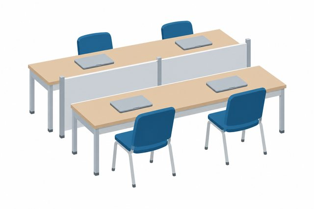

素材をさがす ／ 税理士 ／ 申請
税務署
税理士申請場所
この絵について
入口がガラスの、3階建ての税務署の建物のイラストです。
使い方の例
申告先の説明に使えます。
この絵について要望を送る生成AIのイラストレーターが描き、AIの検品役が確かめた絵です。
素材をさがす ／ 税理士 ／ 申請
入口がガラスの、3階建ての税務署の建物のイラストです。
申告先の説明に使えます。
この絵について要望を送る生成AIのイラストレーターが描き、AIの検品役が確かめた絵です。